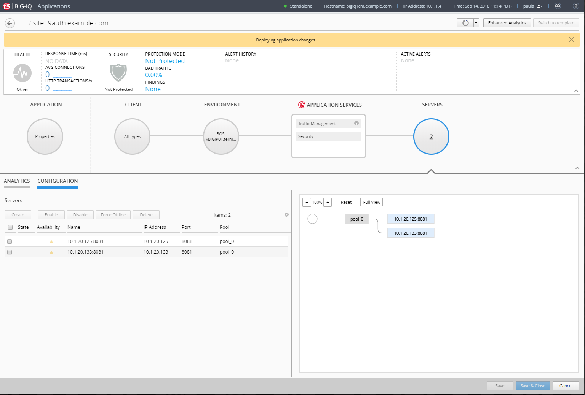

F5 BIG-IQ & Cloud Edition Lab > Class 9: BIG-IQ Access Policy Manager (APM) > Module 1: Securing Application Access using Radius authentication Source | Edit on
Lab 1.3: Create Application¶
Connect as paula to create a new application, and click on Create, select the template previously created f5-HTTPS-offload-lb-Access-RADIUS-Authentication-template-custom1.
Type in a Name for the application you are creating.
Application Name:
site19auth.example.com
To help identify this application when you want to use it later, in the Description field, type in a brief description for the application you are creating.
Description:
My Application on F5 Cloud Edition with authentication
Type the domain of your application (then the ASM policy will always be transparent for this domain)
Domain Names:
site19auth.example.com
For Device, select the name of the device you want to deploy this application to. (if the HTTP statistics are not enabled, they can be enabled later on after the application is deployed)
BIG-IP: Select
BOS-vBIGIP01.termmarc.comand checkCollect HTTP Statistics
{kind=link}
Determine the objects that you want to deploy in this application. To omit any of the objects defined in this template, click the (X) icon that corresponds to that object. To create additional copies of any of the objects defined in this template, click the (+) icon that corresponds to that object.
In the example, fill out the Server’s IP addresses/ports (nodes) and virtual servers names, IPs and ports.
Servers (Pool Member):
10.1.20.125and10.1.20.133Service Port:
8081
LB (Virtual Server):
Destination Address:
10.1.10.119Destination Network Mask:
255.255.255.255Service Port:
443
HTTP Redirect (Virtual Server):
Destination Address:
10.1.10.119Destination Network Mask:
255.255.255.255Service Port:
80
It is good practice to type the Prefix that you want the system to use to make certain that all of the objects created when you deploy an application are uniquely named.

Then Click on Create (bottom right of the window). The Application is deployed.
{kind=link}
Note
In case the Application fails, connect as Marco and go to Applications > Application Deployments to have more details on the failure. You try retry in case of failure.
Note
You can tail the logs: /var/log/restjavad.0.log
In Paula’s Dashboard, she can see her Application.

Launch a RDP session to have access to the Ubuntu Desktop. To do this, in your UDF deployment, click on the Access button of the Ubuntu Lamp Server system and select XRDP

Open Chrome and navigate on the website https://site19auth.example.com.
Fill in user/password to authenticate to the application: paula/paula

Back on BIG-IQ, click on the Application and check the Analytics coming in.

Note
The timeout on the access policy were updated for the purpose of this lab:
Inactivity Timeout:
120 secondsAccess Policy Timeout:
60 secondsMaximum Session Timeout:
180 seconds